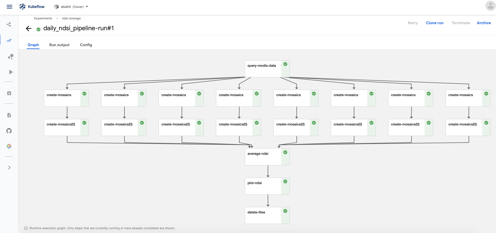
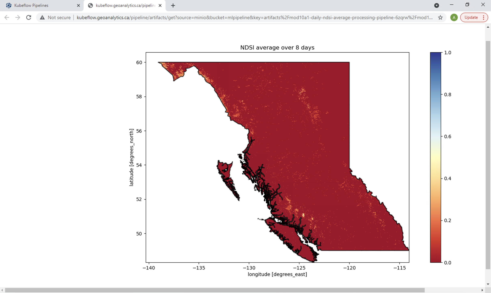

Daily NDSI Average Pipeline#
In this tutorial notebook, we will build a Kubeflow Pipeline which will process the Modis Snow Product over the previous 5 to 8 days (depending on user input) and return the visualization of the NDSI Average in British Columbia, Canada.
The main steps for creating the Daily NDSI Average Pipeline:
Query MODIS snow product (MOD10A1.001) data using a bounding box AOI and date ranges
Threshold the NDSI
Create mosaics from raw MODIS granules by merging different tiles together
Compute the NDSI average over the date range
Visualize the NDSI averages
All these steps for this tutorial will be separated into pipeline components, based on Python functions we will implement.
First, run the following command to install all the packages and dependencies required for this tutorial. The requirements.txt file contains the Python CMR API for data querying, and the Kubeflow Pipelines SDK and lxml (a Python library which allows for easy handling of XML and HTML files, and can also be used for web scraping).
[ ]:
! pip install -r data/requirements_6.txt
[2]:
import os
import sys
import time
import io
import yaml
import json
import logging
import getpass
import requests
import kfp
import kfp.dsl as dsl
import kfp.gcp as gcp
from lxml import html
from google.cloud import storage
from kubernetes import client
from kubernetes.client import V1Toleration
from kfp.components import InputPath, OutputPath, create_component_from_func
from urllib.request import urlopen, Request, build_opener, HTTPCookieProcessor
1. Connect to Kubeflow Client#
To create a pipeline, we must first connect to GEOAnalytics’ Kubeflow Pipeline Client. Please run the cell below and enter your GEOAnalytics username and password to authenticate the client.
[3]:
### GEOAnalyticsKubeflowClient
class GEOAnalyticsKubeflowClient:
def __init__(self, username, password, auth_provider, namespace=None):
self.logger = None
self._initialize_logger()
self.client = None
self.namespace = username if namespace is None else namespace
self._authenticate(username, password, auth_provider)
self._validate_client_connection()
def _initialize_logger(self):
logging.basicConfig(format='%(asctime)s %(levelname)s (%(name)s): %(message)s', level=logging.INFO, datefmt='%Y-%m-%d %H:%M:%S')
self.logger = logging.getLogger("GEOAnalyticsKubeflowClient")
# https://github.com/kubeflow/kfctl/issues/140#issuecomment-719894529
def _authenticate(self, username, password, auth_provider):
session = requests.Session()
response = session.get(auth_provider.host)
headers = {
"Content-Type": "application/x-www-form-urlencoded",
}
data = auth_provider.get_auth_data_dict(username, password)
post_url = auth_provider.get_auth_post_url(response)
session.post(post_url, headers=headers, data=data)
try:
session_cookie = session.cookies.get_dict()["authservice_session"]
except Exception as e:
message = "invalid host or credentials"
self.logger.error(message)
raise Exception(message) from None
self.client = kfp.Client(
host=f"{auth_provider.host}/pipeline",
cookies=f"authservice_session={session_cookie}",
namespace=self.namespace,
)
def _validate_client_connection(self):
if self.client.list_pipelines().total_size > 0:
self.logger.info("successfully authenticated with kubeflow")
else:
message = "unable to validate kubeflow client connection. listing pipelines failed."
self.logger.error(message)
raise Exception(message)
class DexProvider:
def __init__(self, host):
self.host = host
self.name = "dex"
def get_auth_data_dict(self, username, password):
return {"login": username, "password": password}
def get_auth_post_url(self, initial_response):
return initial_response.url
def get_provider_name(self):
return self.name
[4]:
provider = DexProvider("http://kubeflow.geoanalytics.ca")
kubeflow_client = GEOAnalyticsKubeflowClient(input("Username: "), getpass.getpass(), provider)
Username: asaini
············
2021-09-08 19:35:27 INFO (GEOAnalyticsKubeflowClient): successfully authenticated with kubeflow
Now, before we can move forward to building our functions, make sure you have an existing NASA EarthData account. We require authentication for retrieving the MODIS data in this example. If you do not have an EarthData account yet, you can create it for free here: https://urs.earthdata.nasa.gov/home
Then, enter in your username and password in the cell input below.
[5]:
username = input()
password = getpass.getpass()
asaini
·············
2. Implementing the Python Functions#
Once we have our authentications ready, let’s move on and create the functions. The python functions will implement the steps for the working pipeline, which will be converted to components using the kfp.components.create_component_from_func(<python function>, <base image>). The custom Docker image, stored at ‘registry.geoanalytics.ca/examples/modis-ndsi’, is already created with all the necessary packages and files installed, ready for you to use.
2.1 Querying Data Function#
The first step of the process to to collect information about the data we want. Given the number of most recent days and an area of interest, the function must output a list of granules URLs.
The function:
Creates a EarthData client passing in the username and password collected in above, using Hatfield CMR.
Opens the polygon shapefile (saved in our Docker image) and uses its bounds as the area of interest.
Creates a date range based on the days provided.
Queries for granules matching the provided requirements.
Separate URLs of granules into sublists according to their dates.
Return the list of lists.
[6]:
def query_modis_data(days: int, polygon: str, earthdata_user: str, earthdata_pass: str) -> list:
import datetime
import json
import re
import glob
import geopandas as gpd
from hatfieldcmr import CMRClient
# Create earthdata client
ed_client = CMRClient(None, earthdata_user, earthdata_pass)
# Query for granule metadata from NASA CMR
bc = gpd.read_file(glob.glob(polygon + '/*.shp')[0])
bounding_box = bc.bounds.values[0]
# End date is 4 days ago from current date to allow enough time for correctly processed data
end_date = datetime.date.today() - datetime.timedelta(4)
start_date = end_date - datetime.timedelta(days-1)
product = 'MOD10A1.6'
granules = ed_client.query(str(start_date), str(end_date), product, bbox=bounding_box)
print(f"Retrieved {len(granules)} granules from query")
# Separate urls of granules into sublists according to dates
urls_list = []
sublist = []
get_date = re.search('\d{4}\d{3}', granules[0]['links'][0]['href'])
prev_date = datetime.datetime.strptime(get_date.group(), '%Y%j').date()
for file in granules:
url = file['links'][0]['href']
get_date = re.search('\d{4}\d{3}', url)
new_date = datetime.datetime.strptime(get_date.group(), '%Y%j').date()
# Condition to separate to a different sublist: if date is different or its the last granule in the list
if new_date != prev_date or file == granules[-1]:
sublist_json = json.dumps(sublist)
urls_list.append(sublist_json)
prev_date = new_date
sublist =[]
continue
sublist.append(url)
# Serializing json
urls_list_json = json.dumps(urls_list)
return urls_list_json
query_modis_data_op = create_component_from_func(query_modis_data,base_image='registry.geoanalytics.ca/examples/modis-ndsi')
2.2 Thresholding and Creating Mosaic Function#
The function create_mosaics() combines the two steps of thresholding the NDSI of each granule, and combining same date granules together.
The inputs of this function are the sublist of urls of the same date, EarthData credentials, the polygon of British Columbia, and the path to our GEOAnalytics bucket where our generated mosaics will stored.
We will be using the MOD10A Version 6 Product which included the computed NDSI Snow Cover values. The NDSI formula is the normalized difference between highly Visible (VIR) and Shortwave Infrared (SWIR) bands. We will need to threshold to make sure to separate the snow-covered pixels from no-snow pixels. Pixels with values between 20 and 100 are considered Snow Pixels.
The function:
Sets up the Google Cloud Storage File System (GCSFS) API’s credentials for accessing our buckets.
Token is the secret key JSON file which is loaded into the Docker container.
Create an EarthData Client.
Iterates through each URL in the list of URLS (of the same date)
Using the Hatfield CMR, stream in the granule into a temporary file.
Threshold the NDSI (Snow pixels set to 1, otherwise 0).
Append the updated DataArray to a list.
Merge the list of DataArrays together.
Reproject the merged array to the same Coordinate Reference System (CRS) as the BC Polygon.
Clip the mosaic to the polygon.
Write the mosaic raster to a local file.
Copy the contents from the local file to a folder for the current date on Google Cloud.
[7]:
def create_mosaics(urls: list, earthdata_user: str, earthdata_pass: str, polygon: str, gcs_paths: str) -> OutputPath(str):
import datetime
import re
import glob
import tempfile
import rasterio
import gcsfs
import geopandas as gpd
import numpy as np
import rioxarray as rxr
import xarray as xr
from hatfieldcmr import CMRClient
from urllib.request import urlopen, Request, build_opener, HTTPCookieProcessor
from rioxarray.merge import merge_arrays
# Set up the gcsfs system with credentials
tok = '/secret/gcp-credentials/geoanalytics-canada-kubeflow.json'
tok_dict = json.load(open(tok))
gcs = gcsfs.GCSFileSystem(token=tok_dict, access='read_write')
# Create earthdata client
ed_client = CMRClient(None, earthdata_user, earthdata_pass)
today = datetime.date.today()
downloads = []
for url in urls:
# Get date for file naming
get_date = re.search('\d{4}\d{3}', url)
date = datetime.datetime.strptime(get_date.group(), '%Y%j').date()
# Stream in the current granule
buff = ed_client.download_earthdata_file(url, (earthdata_user, earthdata_pass)) # download the image into memory
with tempfile.NamedTemporaryFile() as tmpfile:
tmpfile.write(buff.getvalue())
with rxr.open_rasterio(tmpfile.name, 'r') as src:
ndsi = src.NDSI_Snow_Cover
# Threshold NDSI
ndsi.data[(ndsi.data > 100)] = 0
ndsi.data[(ndsi.data < 20)] = 0
ndsi.data[(ndsi.data != 0)] = 1
ndsi.data = ndsi.data.astype(np.uint8)
downloads.append(ndsi)
#Merge granules together into a mosaic
ds = merge_arrays(downloads)
print('Dataset size (Gb): ', ds.nbytes/1e9)
# Reproject and crop to the polygon
bc = gpd.read_file(glob.glob(polygon + '/*.shp')[0])
bounding_box = bc.bounds.values[0]
ds = ds.rio.reproject(bc.crs)
ds = ds.rio.clip_box(*bounding_box)
print('Dataset size (Gb): ', ds.nbytes/1e9)
file = f'{date}.tif'
ds.rio.to_raster(file, recalc_transform=True)
# Saving to GCP
output_path = f'{gcs_paths}{today}/mosaics/{date}.tif'
gcs.put(file, output_path)
return output_path
create_mosaics_op = create_component_from_func(create_mosaics, base_image='registry.geoanalytics.ca/examples/modis-ndsi')
2.3 Computing Average NDSI Function#
Once the mosaics for all the dates are created, the next step will require a function which stacks these mosaics and calculates the average NDSI value of the mosaics. The GCS path will be passed in as input, pointing to where all the mosaics are stored.
The function:
Sets up the GCSFS credentials for accessing the bucket (same as in previous function)
Iteratively search for and save the dimensions and shape of the mosaic with the smallest size.
All mosaic arrays must be same size to be stacked together.
Resize all mosaics to the saved shape.
Make sure the number of mosaics equals to the number of days that are requested.
Stack the mosaics together.
Compute the mean over all the mosaics.
Place the averaged mosaics in a DataArray with the saved dimensions.
Write the mosaic raster to a local file.
Copy the contents from the local file into the same location where the mosaics are stored.
[8]:
def average_ndsi(gcs_paths: str, days: int) -> str:
import datetime
import glob
import json
import gcsfs
import rasterio
import numpy as np
import rioxarray as rxr
import xarray as xr
# Set up the gcsfs system with credentials
tok = '/secret/gcp-credentials/geoanalytics-canada-kubeflow.json'
tok_dict = json.load(open(tok))
gcs = gcsfs.GCSFileSystem(token=tok_dict, access='read_write')
today = datetime.date.today()
mosaics = gcs.glob(f'{gcs_paths}{today}/mosaics/')
# Arbitrary variables to be replaced
_dims_x = None
_dims_y = None
_shape = (1, 100000, 100000)
# Get the shape of the smallest mosaic for stacking
for mosaic in mosaics:
if not(mosaic.endswith('.tif')):
continue
with gcs.open(mosaic) as fobj:
with rasterio.open(fobj) as dataset:
ndsi = xr.open_rasterio(dataset)
if ndsi.shape < _shape:
_shape = ndsi.shape
_dims_x = ndsi['x']
_dims_y = ndsi['y']
# Resize all the mosaics to the size of the smallest one
arrs = []
for mosaic in mosaics:
if not(mosaic.endswith('.tif')):
continue
with gcs.open(mosaic) as fobj:
with rasterio.open(fobj) as dataset:
ndsi = xr.open_rasterio(dataset)
ndsi.data[(ndsi.data > 100)] = 0
arrs.append(ndsi.data[:,0:_shape[1],0:_shape[2]])
# Assert that the number of mosaics matches the days requested
assert(len(arrs) == days)
stk = np.stack(arrs, axis=0) # stacking
stk = stk.squeeze() # squeezing
stk_mn = np.mean(stk, axis=0) # averaging
# Combining and returning the DataArray
ds = xr.DataArray(data=stk_mn, coords=(_dims_y,_dims_x))
file = 'average_ndsi.tif'
ds.rio.to_raster(file, recalc_transform=True)
# Saving to GCP
output_path = f'{gcs_paths}{today}/{file}'
gcs.put(file, output_path)
return output_path
average_ndsi_op = create_component_from_func(average_ndsi, base_image='registry.geoanalytics.ca/examples/modis-ndsi')
2.4 Plotting the Final NDSI Function#
Once the mosaics for all the dates are created, the next step will require a function which stacks these mosaics and calculates the average NDSI value of the mosaics. The GCS path will be passed in as input, pointing to where all the mosaics are stored.
The function:
Sets up the GCSFS credentials for accessing the bucket.
Load in the average NDSI tiff stored in GCS.
Crop to the BC Polygon shape.
Plot the image with the boundary of BC outlining the edges.
Save the figure as a temporary binary file.
Encode to base64 so it can be shown as in image source in HTML as a “Pipeline Output Artifact.”
Write the metadata for the output viewer and save as a metadata file.
[9]:
def plot_ndsi(final_ndsi: str, polygon: str, days: int, mlpipeline_ui_metadata_path: OutputPath()):
import glob
import json
import gcsfs
import datetime
import rasterio
import base64
import rioxarray as rxr
import geopandas as gpd
import xarray as xr
import numpy as np
import matplotlib.pyplot as plt
from io import BytesIO
from shapely.geometry import mapping
# Set up the gcsfs system with credentials
tok = '/secret/gcp-credentials/geoanalytics-canada-kubeflow.json'
tok_dict = json.load(open(tok))
gcs = gcsfs.GCSFileSystem(token=tok_dict, access='read_write')
# Load in the tiff file from GCS as a DataArray and crop to BC
with gcs.open(final_ndsi) as fobj:
with rasterio.open(fobj) as dataset:
ndsi = rxr.open_rasterio(dataset)
bc = gpd.read_file(glob.glob(polygon + '/*.shp')[0])
ndsi = ndsi.rio.write_crs(bc.crs)
ndsi = ndsi.rio.clip(bc.geometry.apply(mapping), bc.crs)
# Plot the image
f, ax = plt.subplots(figsize=(16, 8))
ndsi[0].plot.imshow(ax=ax, cmap=plt.cm.RdYlBu, vmin=0, vmax=1, clim=[0,1])
bc.boundary.plot(ax=ax, alpha=.8, edgecolor="black")#, facecolor="None")
ax.set(title=f"NDSI average over {days} days")
# Save image as a binary temp file to be encoded to base64
tmpfile = BytesIO()
plt.savefig(tmpfile, format='png')
encoded = base64.b64encode(tmpfile.getvalue()).decode('utf-8')
html = '<img src=\'data:image/png;base64,{}\'>'.format(encoded)
metadata = {
'outputs' : [
{
'source': html,
'storage': 'in-line',
'type': 'markdown',
}]}
with open(mlpipeline_ui_metadata_path, 'w') as metadata_file:
json.dump(metadata, metadata_file)
plot_ndsi_op = create_component_from_func(plot_ndsi, base_image='registry.geoanalytics.ca/examples/modis-ndsi')
Pipeline Output Artifact: The Kubeflow Pipelines UI provides built-in support for many types of visualizations. The current available Output Viewers are Confusion matrix, Markdown, ROC curve, Table, TensorBoard, and Web app. For our example, we want to output a final Raster image using matplotlib, so the output viewers we can use are Markdown or Web app. These will allow us to pass in static HTML code that can be displayed in the Output Artifacts.
2.5 Delete Files Function#
Since our pipeline stores the files we’ve created for today and this is a Daily NDSI Average Pipeline, it is unnecessary to keep the data once we have the final result. The function delete_files() will permanently remove the folder for today’s date containing all the data stored in the GEOAnalytic’s Google Cloud bucket.
The function:
Sets up the GCSFS credentials for accessing the bucket.
Access the folder for today’s date within the GCS bucket.
Check if files exist within this folder.
Check if the folder contains subfolders.
Delete files from the subfolder.
Delete all files from the folder (This will implicitly delete the empty folder itself).
[10]:
def delete_files(gcs_paths: str, mlpipeline_ui_metadata_path: OutputPath()):
import json
import gcsfs
import glob
import datetime
# Set up the gcsfs system with credentials
tok = '/secret/gcp-credentials/geoanalytics-canada-kubeflow.json'
tok_dict = json.load(open(tok))
gcs = gcsfs.GCSFileSystem(token=tok_dict, access='read_write')
# Access the directory with files created for today's run
today = datetime.date.today()
main_folder = gcs_paths + str(today)
cond = gcs.exists(main_folder)
if cond:
folder = gcs.ls(main_folder)
for file in folder:
subfolder = gcs.ls(file)
if len(subfolder) > 1: # If the object is a subfolder
empty_subfile = [gcs.rm(x) for x in subfolder] # Delete all files in subfolder
gcs.rm(file) # Delete other files in the main folder
delete_files_op = create_component_from_func(delete_files, base_image='registry.geoanalytics.ca/examples/modis-ndsi')
3. Assembling the Pipeline#
Once we have our components ready, the next step is to put them together in a pipeline. The Daily NDSI Pipeline will take the arguments for the number of days you want an average over, your EarthData username and password, the path to the polygon shapefile (this file is already downloaded in the base image), and the GCS path where files will be stored.
Now there are two important variables to notice:
custom_nodepoolwhich is an operator that configures the Google Kubernetes Engine (GKE) preemptible in a container op, custom to this tutorial.gcp_key, an operator to configure the container to use Google Cloud Platform (GCP) service account by service account key stored in a Kubernetes secret. This allows us to read and write to GEOAnalytics GCS buckets.
Applying these operators to the components will allow the pipeline to run smoothly. We will also set the CPI request at 3.5 and memory request at 11,000 MB to enforce operations running on individual pods.
The first component to be called in the converted
query_modis_datafunction.The next step is to threshold the NDSI and combine the rasters for the same date in a mosaic using
create_mosaic. To efficiently do this, we will use thedsl.ParallelForloop which will run the process operation on different pods, where each pod will take sublist of the list of granule URLs as input. i.e. Each pod will process granules of a different date, so the number of pods should be equivalent to the number of days passed in.After we have the mosaics created, we will compute the average of the NDSI with our
average_ndsi_opoperation. the.after(processOp)method constrains the operation to start once the previous parallel operations are complete.Finally, passing in the output path from the previous operation to the averaged GeoTIFF, we can plot the final image.
An optional step is to delete the files created and stored within the GCS. If you want to take a look at the saved files, the mosaics and the final average NDSI (all GeoTIFFs), then simply comment out the
deleteOp.
[11]:
@dsl.pipeline(
name='MOD10A1 Daily NDSI Average Processing Pipeline',
description='A pipeline that processes the daily Normalized Difference Snow Index in British Columbia given a time range.'
)
def daily_ndsi_pipeline(days: int, earthdata_user: str, earthdata_pass: str, polygon: str, gcs_paths: str):
custom_nodepool = gcp.use_preemptible_nodepool(V1Toleration(key='daily-ndsi-processing', operator='Exists'))
gcp_key = gcp.use_gcp_secret(secret_name='user-gcp-sa', secret_file_path_in_volume='/geoanalytics-canada-kubeflow.json')
# 1. Fetch the URLs of our MODIS data from the query
fetchOp = query_modis_data_op(days,
polygon,
earthdata_user,
earthdata_pass
).apply(custom_nodepool)#.set_cpu_request('3.5').set_memory_request('11000M')
# 2. "Download" the data and create mosaics stored in a list
with dsl.ParallelFor(fetchOp.output) as item:
processOp = create_mosaics_op(item,
earthdata_user,
earthdata_pass,
polygon,
gcs_paths
).apply(custom_nodepool).apply(gcp_key).set_cpu_request('3.5').set_memory_request('11000M').set_retry(3)
# 3. Get average of the all the mosaics
combineOp = average_ndsi_op(gcs_paths,
days).after(processOp).apply(custom_nodepool).apply(gcp_key)#.set_cpu_request('3.5').set_memory_request('11000M').set_retry(3)
# 4. Plot the average (input is an Xarray DataArray)
plottingOp = plot_ndsi_op(combineOp.output,
polygon,
days).apply(custom_nodepool).apply(gcp_key)#.set_cpu_request('3.5').set_memory_request('11000M').set_retry(3)
# 5. Delete files from GCS
deleteOp = delete_files_op(gcs_paths).after(plottingOp).apply(custom_nodepool).apply(gcp_key)#.set_cpu_request('3.5').set_memory_request('11000M').set_retry(3)
# Configurations for the pipeline to run in the specific nodepool and allowing access to GEOAnalytics' container Rrgistry
dsl.get_pipeline_conf().set_default_pod_node_selector('app.geoanalytics.ca/nodepool', 'daily-ndsi-processing')
dsl.get_pipeline_conf().set_image_pull_secrets([client.V1LocalObjectReference(name="regcredgeoanalytics")])
Let’s compile the pipeline with the name “Average NDSI Pipeline!”
[12]:
# COMPILE PIPELINE #
pipeline_name = "Average NDSI Pipeline!"
pipeline_func = daily_ndsi_pipeline
pipeline_filename = pipeline_func.__name__ + '.yaml'
kfp.compiler.Compiler().compile(pipeline_func, pipeline_filename)
The arguments we will pass in below are to be used for the Run. The username and password will be what you entered above in Section 1, and you can modify the days parameter to any reasonable integer. The polygon and gcs_paths should stay the same as they are hardcoded for this tutorial example.
[13]:
arguments = {
'days': 8,
'earthdata_user': username,
'earthdata_pass': password,
'polygon': '/bc-polygon',
'gcs_paths': 'gcs://geoanalytics-user-shared-data/tutorial_data/'
}
Finally, let’s run and upload the pipeline!
[14]:
count=1 # only run once
[15]:
# If the experiment under the given name already exists - get it's ID, else - create a new experiment
try:
experiment_id = kubeflow_client.client.get_experiment("daily-avg-ndsi")
except:
experiment = kubeflow_client.client.create_experiment("daily-avg-ndsi")
run_name = pipeline_func.__name__ + f'-run#{count}'
run_result = kubeflow_client.client.run_pipeline(experiment.id, run_name, pipeline_filename, arguments)
count += 1
2021-09-08 19:36:44 INFO (root): Creating experiment daily-avg-ndsi.
[44]:
echo_pipeline = kubeflow_client.client.upload_pipeline(pipeline_filename, pipeline_name, "DAILY AVERAGE NDSI PIPELINE")
4. The Results#
Head over to the Kubeflow Pipeline UI and take a look at the Run you created. Once finished, the pipeline graph should look like this image below.

To see the final plot of the Averaged NDSI over the past few days, click on the plot_ndsi operation and under the “Input/Output”, click on the link in the Output Artifacts section. This is open a new tab with the final plot shown, which should look similar to this:

Note: This NDSI was processed on September 2nd, 2021.
5. Additional Sources#
For additional information take a look at these resources:
Information about the MOD10A Product: https://nsidc.org/data/MOD10A1/versions/6
Building Python Function-based Components: https://www.kubeflow.org/docs/components/pipelines/sdk/v2/python-function-components/
The GCSFS Documentation: https://fs-gcsfs.readthedocs.io/en/latest/
Information about Kubeflow Pipelines Output Artifacts: https://www.kubeflow.org/docs/components/pipelines/sdk/output-viewer/
The Kubeflow Pipeline SDK API Documentation: https://kubeflow-pipelines.readthedocs.io/en/latest/index.html